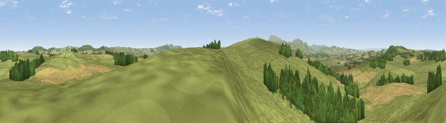

Viewpoint near Doddington
#15074 in England · top 52% of its area beats it · near DoddingtonThe view, rendered

A 360° render of this exact spot computed from the terrain model, tree cover and land cover — summer colours, afternoon light, calibrated against photographs of famous viewpoints. Real trees, hedges and buildings will differ in detail.
The panorama
Grey silhouette: terrain skyline in each direction (720 bearings, Earth curvature and refraction included). Dashed green: skyline with trees (+15 m) and buildings (+8 m) as obstacles. Blue strip: how far the ground is visible on each bearing.
Where the view opens
Wedge length = distance to the farthest visible ground on that bearing (vegetation-aware). Rings at 10, 25 and 50 km.
What fills the view
72% grassland · 15% cropland · 13% woodland
Angular shares of the visible panorama (visual magnitude), not map area. Landscape diversity 0.35 (0–1 Shannon).
Key numbers
More beautiful places nearby
The staircase of upgrades: each row has a higher view potential than everything closer. Driving times are estimates from straight-line distance, calibrated against real road routing — check an actual route before setting out.
| Place | Direction | Drive | Score |
|---|---|---|---|
| Viewpoint near Doddington | SSW · 1 km | ~4 min | 76.0 |
| Viewpoint near Doddington | SW · 2 km | ~4 min | 76.3 |
| Viewpoint near Doddington | NW · 4 km | ~9 min | 80.3 |
| Viewpoint near Belford | E · 5 km | ~11 min | 81.3 |
| Greensheen Hill | ENE · 5 km | ~11 min | 87.5 |
| Viewpoint near Chillingham | SE · 10 km | ~20 min | 88.1 |
| Ullock Pike | SW · 129 km | ~153 min | 89.4 |
| Long Side | SW · 129 km | ~153 min | 89.5 |
55.59041, -1.98054 · source: screening · position refined by local search. Computed location — check access rights before visiting.